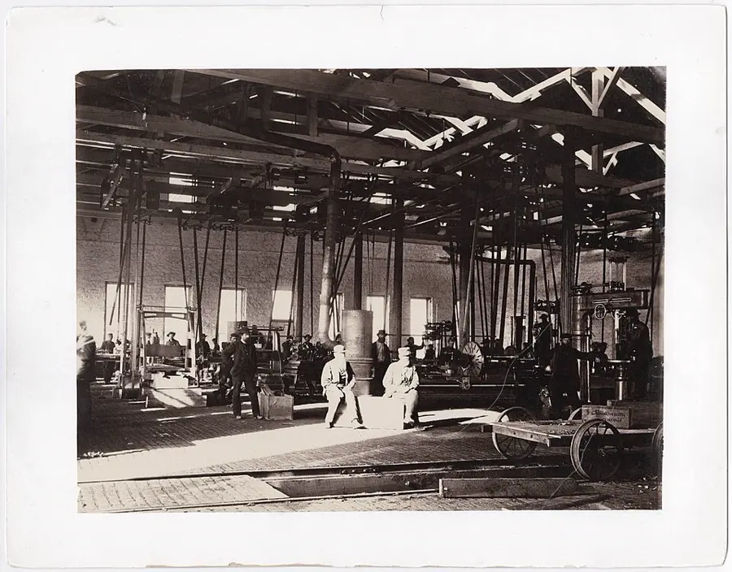
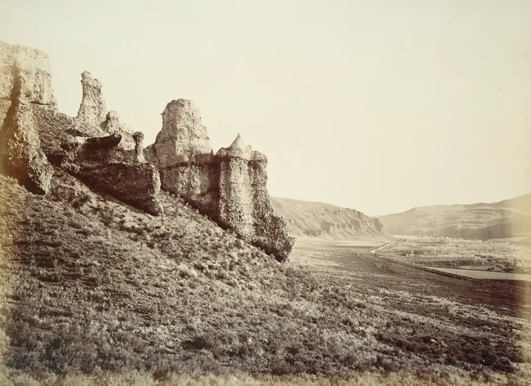
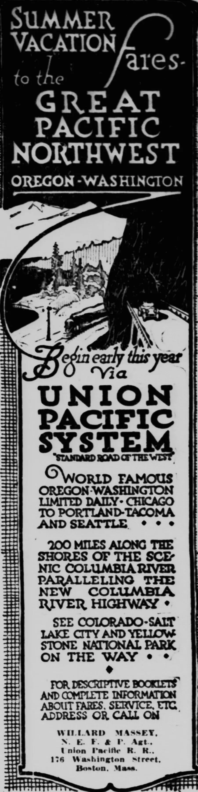
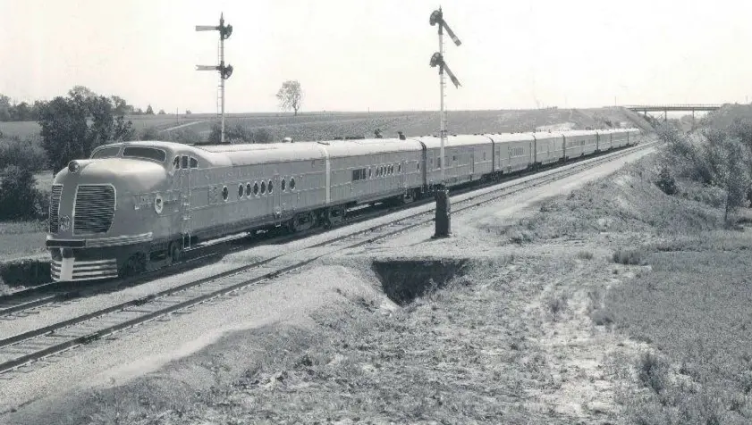

대표 로고대표 브랜드 마크
대표 로고대표 브랜드 마크Union Pacific Corporation
Union Pacific Corporation은 Union Pacific Railroad의 지주회사 역할을 하는 미국 상장 철도 지주회사이다. 화물 철도 운송 사업을 중심으로 자회사를 거느린 기업이다.
최종 업데이트
Union Pacific Corporation는 어떤 브랜드인가
회사는 Union Pacific Railroad를 보유한 미국의 상장 철도 지주회사이다. 1969년 유타주에서 법인으로 설립했으며 자회사와 함께 네브래스카주 오마하에 본사를 둔 기업이다.
Berkshire Hathaway가 소유한 BNSF Railway와 함께 미시시피강 서쪽 화물 철도 운송 시장에서 사실상 양강 구조를 형성한다. Missouri Pacific Railroad, Chicago and North Western Transportation Company, Western Pacific Railroad, Southern Pacific Transportation Company 등 여러 철도 회사를 인수해 Union Pacific Railroad에 합병했다.
Norfolk Southern을 $85 billion에 인수하는 계획도 발표한 상태이다.
Union Pacific Corporation는 어떻게 시작되고 성장했나
Union Pacific Corporation은 1969년 유타주에서 Union Pacific Railroad와 다른 자회사를 위한 지주회사로 설립했다. 그 전신인 Union Pacific Railroad는 Pacific Railway Acts 통과 뒤인 1862년 7월 1일 법인으로 설립했다.
이 철도는 아이오와주 Council Bluffs에서 서쪽으로 건설되어 샌프란시스코만에서 동쪽으로 건설된 Central Pacific Railroad 노선과 1869년 5월 연결했다. 지주회사는 1982년 Missouri Pacific Railroad와 Western Pacific Railroad를 인수했다.
Missouri Pacific Railroad는 1997년 1월 1일 Union Pacific Railroad에 법적으로 합병했다.
Union Pacific Corporation의 브랜드 아이덴티티는 무엇인가
여러 철도 회사를 인수해 Union Pacific Railroad에 통합했으며, 미시시피강 서쪽 화물 철도 운송의 양강 구조를 이루는 지주회사이다.
Union Pacific Corporation는 지금 어떤 상태인가
회사는 공개 거래되는 철도 지주회사이며 네브래스카주 오마하에 자회사 Union Pacific Railroad와 함께 본사를 둔 기업이다. Norfolk Southern을 $85 billion에 인수할 계획을 발표한 상태이다.
규제 당국이 승인하면 미국 최초의 대륙횡단 철도망을 구성하는 거래이다.
Union Pacific Corporation 로고는 어떻게 변해왔나
대표 로고대표 브랜드 마크사진으로 보는 Union Pacific Corporation의 역사




자주 묻는 질문
Union Pacific Corporation는 어느 나라 브랜드인가요?
Union Pacific Corporation는 미국의 모빌리티 브랜드입니다.
Union Pacific Corporation는 언제 설립되었나요?
Union Pacific Corporation는 1969년 설립되었습니다.
Union Pacific Corporation의 브랜드 아이덴티티는 무엇인가요?
여러 철도 회사를 인수해 Union Pacific Railroad에 통합했으며, 미시시피강 서쪽 화물 철도 운송의 양강 구조를 이루는 지주회사이다.
Union Pacific Corporation의 대표 제품은 무엇인가요?
핵심 사업 구성은 자회사 Union Pacific Railroad를 통한 화물 철도 운송이다.
Union Pacific Corporation는 어느 기업이 소유하고 있나요?
회사는 공개 거래되는 철도 지주회사이며 네브래스카주 오마하에 자회사 Union Pacific Railroad와 함께 본사를 둔 기업이다.
Union Pacific Corporation의 본사는 어디에 있나요?
Union Pacific Corporation의 본사는 오마하에 있습니다(위키데이터 기준).
Union Pacific Corporation의 공식 웹사이트는 어디인가요?
Union Pacific Corporation의 공식 웹사이트는 http://www.up.com 입니다.
출처와 검증
Union Pacific Corporation 관련 참고: 공식 웹사이트 · 위키데이터 Q20183163 · 영어 위키백과. 브랜드명은 한글과 원어를 함께 표기하되 데이터에 없는 표기는 만들지 않습니다. 기원 국가·설립연도는 검수된 정의문에서 확인된 값을 우선하고, 없을 때만 공식 웹사이트 URL이 일치하는 위키데이터 개체의 값을 씁니다. 탄생일의 월·일은 위키데이터, 위키백과 정보상자, 본문 가운데 같은 연월로 확인되는 값만 싣고, 출처끼리 다르면 싣지 않습니다. 웹 첫 보관은 인터넷 아카이브가 공식 사이트 첫 화면을 처음 보관한 날로, 사이트 개설일과 다를 수 있습니다. 연 매출은 미국 증권거래위원회(SEC)에 제출된 연차 보고서(10-K)의 XBRL 값이며 달러 금액을 반올림했습니다. 위키데이터 값은 2026-09-12 기준입니다.